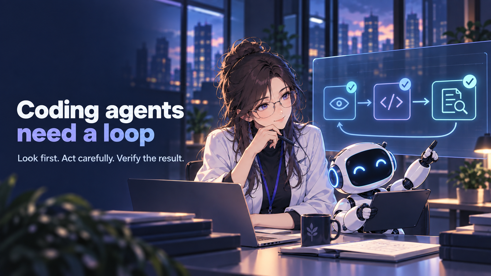
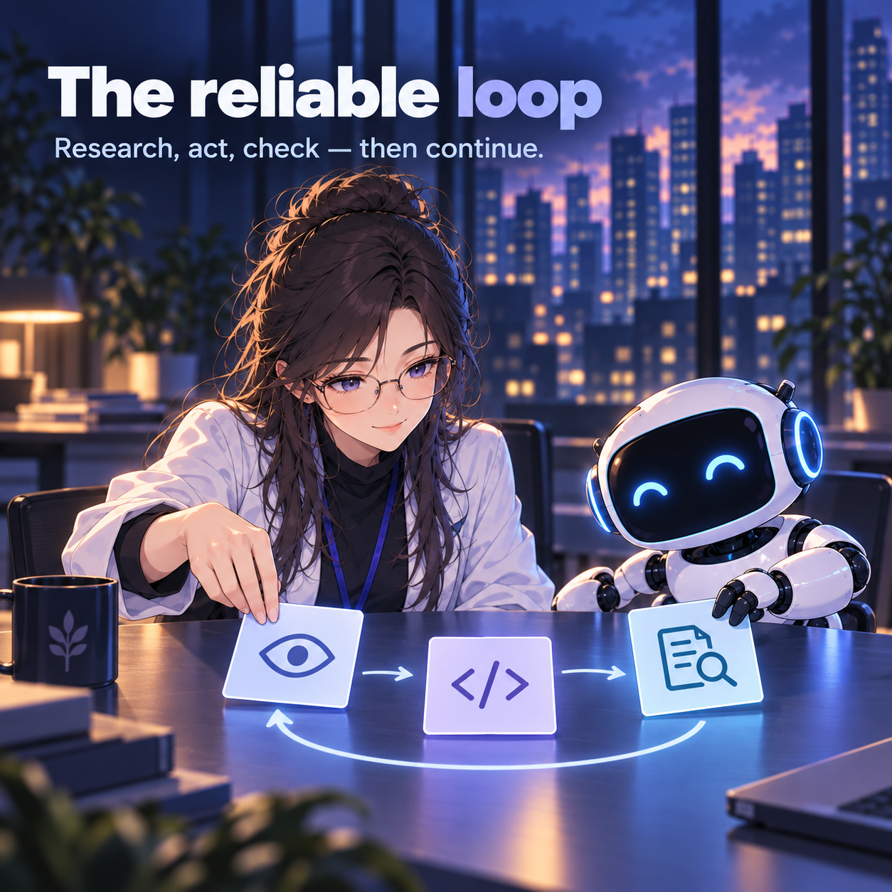

Reference behavior
Use local ChatGPT Work transcripts as the process reference, after copy-hashing them.
A capable model still needs a wrapper that knows when to look, wait, act, and check.

A model can rush into edits, guess while a tool is running, split work before understanding it, or stop without checking the result. Good output is not proof that the workflow was good.
Use local ChatGPT Work transcripts as the process reference, after copy-hashing them.
Teach Kilo and OpenCode the same look-first, wait, split, act, and verify habits.
Keep matched-task replay and holdouts visible so process similarity is not mistaken for success.

Raw transcripts stay out of Git. Reports, specs, modes, scorers, tests, and observed replay results stay inspectable. The project is not SWE-bench, not a public coding exam, and not a new Codex clone.
Current state: the recipe and modes exist; long outcome replay is still in progress.